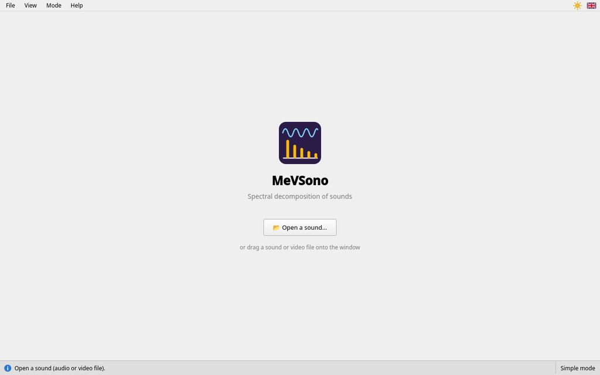
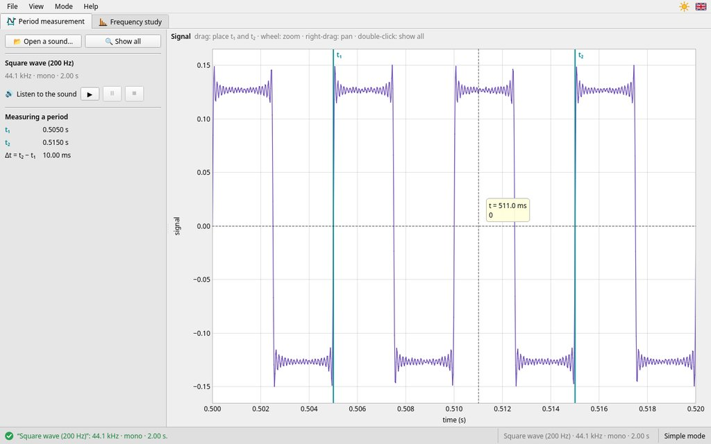
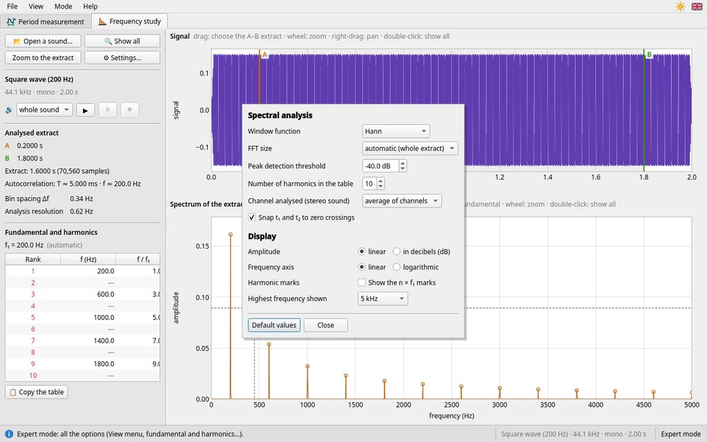

MeVSono — User guide
Spectral decomposition of sounds · version {{version}}
1. What is MeVSono for?
MeVSono is for studying a sound: an instrument, a voice, a tuning fork… It shows the sound in two ways:
- the signal, at the top: how the sound varies over time, as on an oscilloscope. This is where you measure the period of the sound;
- the spectrum, at the bottom: the frequencies that make up the sound, each with its amplitude. This is where you read the fundamental, which sets the pitch of the note, and the harmonics, which give the instrument its timbre.
MeVSono is a measuring instrument: it gives times, durations and frequencies. The calculations (period, frequency, ratios between harmonics) are your work.
2. The window

- 1The two tabs: Period measurement (the signal alone, and cursors t₁ and t₂) and Frequency study (the extract chosen between A and B, and its spectrum).
- 2Top of the left panel: open a sound, see the whole signal again (🔍 Show all) or only the extract (Zoom to the extract).
- 3Theme and language, to the right of the menus: the sun (light theme) or the moon (dark theme), and the flag of the language. A click switches to the other theme or language.
- 4The open sound and its listening buttons ▶ ⏸ ⏹.
- 5The measurements of the tab: here, the analysed extract, between A and B; in the other tab, times t₁ and t₂ and their difference Δt.
- 6The signal. Dragging on it chooses the extract (or, in the other tab, places t₁ and t₂).
- 7The spectrum of the extract. The crosshair gives the value under the mouse and that of the nearest peak.
- 8Status bar: on the left, what just happened (green: a success; red: a problem); on the right, the open sound and the mode.
Help at hand. Above each graph, a grey line recalls the possible mouse gestures. In the left panel, the grey texts say what to do.
3. Opening a sound
When it starts, MeVSono offers to open a sound.


📂 Open a sound… button (or Ctrl+O), or drag the file onto the window. MeVSono reads sounds (WAV, MP3, M4A, OGG, FLAC…) and the sound track of videos (MP4, MOV…): a phone recording works very well.
As soon as a sound is open, MeVSono chooses an extract (at first, almost the whole sound, between cursors A and B) and shows its spectrum.
4. Listening to the sound
The listening buttons are under the name of the sound, in the left panel. In the Period measurement tab, they play the whole sound; in the Frequency study tab, the extract, between A and B.
- ▶ starts playback: a red line moves along the signal, at the time being heard.
- ⏸ pauses; ▶ resumes at the same place.
- ⏹ stops: the next playback starts from the beginning.
The Space key starts or pauses playback.
Listen to the extract before measuring it: it should contain the held note, without silence.
5. Measuring a period
A musical sound is periodic: the same pattern repeats. Its duration is the period T, and the frequency is f = 1 / T.


- Click the Period measurement tab, at the top of the window.
- Zoom on the signal with the mouse wheel, until you see a few clear patterns.
- Drag (hold the left button) from a point of the pattern to the same point of a later pattern: the turquoise cursors t₁ and t₂ are placed there. They “snap” to the nearest rising zero crossing: no need to aim to the pixel. Grab them to move them.
- Read t₁, t₂ and the duration Δt = t₂ − t₁ in the left panel.
- Count the number n of patterns between t₁ and t₂, then compute T = Δt / n and f = 1 / T.
Measure over several periods to measure better. The error on the position of the cursors is shared between the n periods: over 10 periods, it is 10 times smaller than over a single one.
Measuring a duration does not change the analysed extract. To read the spectrum, go to the Frequency study tab.
6. Reading the spectrum
The spectrum, in the Frequency study tab, shows the frequencies present in the extract. Each peak is a frequency; its height is its amplitude.
- A pure sound (the tuning fork) gives a single peak.
- A complex sound (a flute, a voice) gives a series of peaks. The first one is the fundamental f₁: it is the frequency of the note. The others are the harmonics, at frequencies fn = n × f₁ (2 f₁, 3 f₁…).
Measuring the frequency of a peak
Put the mouse near the peak, on the spectrum. The crosshair shows:
- the value under the mouse: the frequency and amplitude at the pointer;
- the nearest peak, marked with a filled dot: its frequency and amplitude. This is the value to write down. No need to aim at the top exactly.
Zoom with the wheel to separate close peaks; double-click to see the whole spectrum again.
Pitch and timbre. Two instruments playing the same note have the same fundamental: the sound has the same pitch. Their harmonics do not have the same amplitudes: the sound does not have the same timbre. A pipe closed at one end (stopped organ pipe) only has odd harmonics (f₁, 3 f₁, 5 f₁…).
7. Choosing the analysed extract
The spectrum is that of the extract chosen on the signal, between cursors A (orange) and B (green).
- Click the Frequency study tab, at the top of the window.
- Drag on the signal from one time to another: the extract, greyed, goes from A to B. To adjust it, grab A or B; a simple click brings the nearest cursor under the mouse. A always stays before B: a cursor stops on the other one.
- The spectrum is computed again at once. The left panel gives A, B and the duration of the extract.
Choose an extract where the sound is steady: the held note, without the start (the attack) or a silence.
The longer the extract, the finer the spectrum. Two frequencies are only separated if they differ by more than about 1 / (duration of the extract): 10 Hz for a 0.1 s extract, 1 Hz for 1 s. If the peaks are wide, lengthen the extract.
8. Example: a square wave
A signal generator feeds a 200 Hz square wave to a loudspeaker; the sound is recorded, then opened in MeVSono.
- Period. In the Period measurement tab, enclose two patterns (figure in part 5): Δt = 10.00 ms for n = 2 patterns, so T = Δt / 2 = 5.00 ms.
- Frequency. f = 1 / T = 1 / (5.00 × 10−3 s) = 200 Hz.
- Spectrum. In the Frequency study tab, hover over the first peak: the nearest peak is at 200 Hz. It is the fundamental f₁, equal to the computed frequency: the two measurements agree.
- Harmonics. The next peaks are at 600 Hz, 1000 Hz, 1400 Hz… that is 3 f₁, 5 f₁, 7 f₁: a square wave only has odd harmonics, weaker and weaker.
Your turn: do the same with an instrument, then with your voice. Which harmonics are present? Which one is the strongest?
9. Mouse and keyboard
| Action | Gesture |
|---|---|
| Place t₁ and t₂ (Period measurement tab) | drag on the signal |
| Choose the extract (Frequency study tab) | drag on the signal |
| Move a cursor | grab it and drag; or click: the nearest one comes under the mouse |
| Zoom (signal, spectrum) | wheel, around the mouse |
| Pan | hold the right button, or Shift+wheel |
| Show all again | double-click, or 🔍 Show all |
| Read a frequency | hover over the spectrum near the peak |
| Listen, pause | Space, or ▶ ⏸ ⏹ |
| Open a sound | Ctrl+O, or drag the file onto the window |
| Enlarge or shrink the texts | Ctrl++, Ctrl+−; Ctrl+0: normal size |
| Open this guide | F1, or Help › User guide… |
10. Troubleshooting
- “Cannot read…: unknown format”
- The file is not a readable sound or video. Save it as WAV or MP3 (for example with the phone's app), or ask your teacher.
- “This file contains no sound”
- The video was filmed without sound, or the sound was cut.
- The signal is just a solid band.
- The sound is long: you only see its envelope. Zoom with the wheel to see the patterns appear.
- The crosshair does not point at the peak you want.
- Zoom on the spectrum (wheel) to separate close peaks, then move the mouse near the peak.
- The peaks are wide, or two peaks merge.
- Lengthen the extract (part 7).
- Nothing can be heard.
- Check the volume and the output of the computer (speakers or headphones). “No audio output” means that none is plugged in.
- The texts have become huge (or tiny).
- Ctrl+0 restores the normal size.
- The program closed by itself.
- An unexpected error occurred. Start MeVSono again and tell your teacher.
For teachers
The two modes, the analysis settings, installing and configuring the classroom.
11. Simple mode, expert mode
The Mode menu offers two modes; the current mode is shown on the right of the status bar.
- Simple (default): measurements only, those described in the students' part. The initial extract covers the middle 80 % of the sound; playback plays the extract; t₁ and t₂ snap to rising zero crossings; the display is fixed (linear amplitudes, frequencies up to 5 kHz). The software gives neither the fundamental nor the period: the student measures them.
- Expert: all the options (part 12). The initial extract lasts half a second, on the loudest part of the sound.
The expert mode settings are kept when going back to simple mode. To impose a mode on a whole classroom, see part 15.
12. Expert mode


- Fundamental and harmonics: MeVSono looks for the frequency f₁ whose multiples best match the peaks. The table gives, for each rank n, the measured frequency, the ratio f / f₁, the amplitude in decibels and relative to that of the fundamental. A dash means a rank without a peak (even harmonics of a stopped pipe or of a square wave). 📋 Copy the table copies it for a spreadsheet.
- Right-click a peak of the spectrum to use it as the fundamental; Automatic detection goes back to the software's choice.
- Period by autocorrelation of the extract: the signal is compared with itself shifted, and is most alike for a shift of one period. Useful to check a measurement.
- Snap t₁ and t₂ to zero crossings (Period measurement tab, checked by default): uncheck it to place the cursors freely, on a crest for example.
- Playback: the list to the left of ▶ chooses the whole sound or the A–B extract.
- View menu: amplitudes in decibels, logarithmic frequency axis, channel analysed for a stereo sound (average, left or right), ⚙ Settings… (also at the top of the left panel).
- Exports (File menu): the spectrum (columns
f (Hz),A,A (dB)) and the signal extract (t (s),signal), as CSV. In English, columns are separated by,with a decimal point. In Python:pandas.read_csv("spectrum.csv").
13. Analysis settings
In expert mode, ⚙ Settings… opens the settings. They apply at once and are kept from one session to the next; Default values restores them.
Window function
Before the computation, the extract is multiplied by a “window” that fades it at its edges: without it, the abrupt start and end of the extract would spread every peak (spectral leakage).
| Window | Use |
|---|---|
| Hann (default) | the right choice for most sounds: narrow peaks, precise frequencies and amplitudes |
| rectangular | no weighting: the narrowest peaks, but strong leakage and approximate amplitudes |
| Hamming | close to Hann |
| Blackman, Blackman-Harris | wider peaks, but very low leakage: to see weak harmonics |
| flat top | wide, flat peaks: the most accurate amplitude measurement |
FFT size
The spectrum is computed by fast Fourier transform (FFT). With the automatic size, the whole extract is analysed in one go, padded with zeros up to a power of 2 (beyond 262,144 samples, about 6 s, it is split as below). A fixed size smaller than the extract splits it into segments that overlap by half, and averages their spectra: the spectrum is smoother, but less fine. The bin spacing is Δf = sampling rate / FFT size; peak frequencies are refined by interpolation, well below that.
Other settings
- Peak detection threshold: a peak weaker than the largest one by this amount is ignored (−40 dB: 1 % of its amplitude), including for the crosshair's “nearest peak”. Lower it to find weak harmonics.
- Number of harmonics in the table (10 by default).
- Channel analysed for a stereo sound.
- Amplitude linear or in dB, frequency axis linear or logarithmic, highest frequency shown (5 kHz by default), harmonic marks (pink dotted lines at frequencies n × f₁).
Amplitudes are sine-wave amplitudes: a pure sound of amplitude 0.5 gives a peak of height 0.5. They depend on the microphone level: compare amplitudes with one another.
14. Classroom ideas
- Recording a sound: a phone (voice recorder app) works very well. Hold it a few tens of centimetres from the source, in a quiet room, and avoid saturation (signal clipped at the top and bottom): it creates false harmonics.
- Pitch and timbre: the same note played by two instruments (same fundamental, different harmonics), or two notes of the same instrument. A pipe open at both ends has all the harmonics, a pipe closed at one end only the odd ones.
- Plucked string: a fading sound; take the extract just after the attack.
- Beats: two tuning forks of 440 Hz and 444 Hz played together; a 0.1 s extract does not separate the two frequencies, a 1 s extract does. The envelope of the signal varies 4 times per second.
- Cross-checking: compare the frequency computed from the period with that of the first peak of the spectrum (part 8).
15. Installing and configuring
Installation
- Windows, no installation: MeVSono fits in a folder (
.ziparchive), to copy onto the computer, the school network or a USB stick; runmevsono.exe. It works offline, guide included. On first launch, Windows may show “Windows protected your PC”, because MeVSono is not digitally signed: click “More info”, then “Run anyway”. To open a sound directly: right-click the file → “Open with…” → MeVSono. - Windows, installer:
MeVSono-version-windows-x64-setup.exeinstalls MeVSono for all users inProgram Files\MeVSuite, with a Start menu shortcut; it is uninstalled from the Windows Settings. Deployment on many computers (WAPT, GPO): options/VERYSILENT /SUPPRESSMSGBOXES /NORESTART. - Linux:
.debpackage (Ubuntu, Debian),.rpm(Fedora), or.AppImage, which runs without installation (make it executable). - Formats: WAV, MP3, OGG, Opus, FLAC, M4A and AAC, AIFF, CAF; the sound track of
MP4, MOV, M4V, MKV, WebM, AVI videos. Other formats are read if ffmpeg is installed on the computer, or
placed in an
ffmpegfolder next to the program. Sounds are read up to 30 minutes. - Projector: Ctrl++ enlarges the texts and graphs; Ctrl+0 goes back to the normal size.
Saved settings
On first launch, MeVSono uses the language and the light or dark theme of the system (English if the language is neither French nor English). Numbers follow the language: decimal comma in French, decimal point in English.
MeVSono remembers from one session to the next the mode, the language, the theme, the analysis
settings, the text enlargement, the last folder opened and the window size, in a small text file
mevsono.ini, specific to each user and editable by hand; deleting it restores the default
values.
| System | Location |
|---|---|
| Windows | %APPDATA%\MeVSuite\mevsono.ini |
| Linux | ~/.config/MeVSuite/mevsono.ini |
Enforced settings
A mevsono.ini file placed next to the program (computer room, USB stick) is read at
every launch and takes priority over the user's settings; MeVSono never writes it. For example:
mode = simple
language = en
theme = lightmakes every computer start in simple mode, in English and with the light theme. The possible keys are
those of the user's file; language and theme also accept auto
(system language or theme). The paths of both files are shown in Help › About
MeVSono…
The four programs of the suite (MeVPix, MeVCine, MeVReg, MeVSono) keep their settings in this same
MeVSuite folder. The guide is written each time it is opened to the system's temporary
folder (mevsono-help): it can be printed or saved from the browser.
16. Errors, contact and licence
Unexpected error: MeVSono shows a message before closing and saves the details to
mevsono.log, in the same folder as mevsono.ini. Attach this file to your
report.
Contact: Rémi MEVAERE, suite@sciences-physiques.net. Comments, ideas for improvement and problems are welcome.
Licence: MeVSono is free software, released under the MIT licence; it is written in C++ with the free Qt and Qt Multimedia libraries (LGPL version 3) and relies on FFmpeg to read sounds. The components used and their licences are listed in Help › About MeVSono…; Help › About Qt… gives the Qt version and its licence terms.